Special Article
Special Article
Jaffna Monitor hellojaffnamonitor@gmail.com 58 W e now shift our focus on some of the frontline artists who have nurtured the nathaswaram and thavil in Sri Lanka through the 60s and 70s to the present day – the key objective of this series of articles.
Frontline Thavil artists in Sri Lanka: Nathaswaram recitals (referred to as ‘Kucheries or fr;Nrup) usually begins with a section dedicated to the thavil performance. This period sets in the ambience and the tempo which then seamlessly blends into the ragas and melodies that flows from the nathaswaram. The essential attributes of the thavil players are a deep understanding of the rhythmic cycles (‘Thalam’ or jhsk;) and the different percussive expressions that may be fitted into each rhythmic cycle. The rhythmic cycles may be performed at different speeds which are multiples (x1, x2 and x3 or even x4) of a baseline speed. Accomodating the different percussive expressions into these changing speeds requires a deep understanding of the basic rhythm. In order BY: Mahesan Nirmalan MBBS, MD, FRCA, PhD, FFICM Manchester, United Kingdom Special Article Part-3 “Nathaswara Osaiyile” (ehj];tu XirapNy): An ancient art form that defines a people
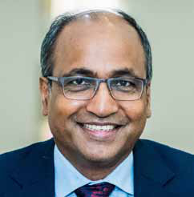

Jaffna Monitor
hellojaffnamonitor@gmail.com
59
to do so, the artists needs to be able to vary the
finger speeds – sometimes to extremely high
speeds, in order to accommodate the popular
percussive expressions that will resonate
with the audience. The artists’ imagination
and creativity will determine the type of
percussive expressions that are built into each
rhythmic cycle. Furthermore, the Thavil player
also needs to have a sound understanding
of the lyrics of each composition, the flow
of these compositions and the unwritten
impromptu improvisations (Kalpana swaras
or fy;gdh ];tuk; and Raga alapanas or
Myhgid) that the nathaswaram player
is likely to come up with on the day. It is
extremely rare for someone to pocess all these
attributes as there is no written template that
are available for them to follow (unlike in a
western orchestra). The nathaswaram and
thavil communities in Sri Lanka was littered
with people who brought all these attributes
together and were seen as the ultimate
masters of these skills. In Part 1 of this series
(Jaffna Monitor 15th December 2024) we
have already discussed V Thakshinamurthy
and his reputation. It is however important
to emphasise, that Thakshinamurthy was a
product of his environment and there were
many other equally skilled, but perhaps less
well known, artists who played along with
Thakshinamurthy. NR Sinnarasa (from the
village of Inuvil - ,Ztpy; rpd;duhrh),
K Ganeshapillai (from Nachimar Kovil or
ehr;rpkhu; Nfhtpy; fNzrgps;is), M
Nadarajasundaram Pillai (From Chavakacheri
or rhtfr;Nrup eluh[Re;juk; gps;is) and
Kamatchisundaram Pillai (From Jaffna or
aho;g;ghzk; fhkhl;rpRe;juk;gps;is) are
four of the pillars of Thavil, whose names
will live in the memories of all followers of
carnatic music in Sri Lanka. Together they
ruled the world of thavil/nathaswaram music
in the 70s, 80s and 90s and their fame and
reputation spread all over the Tamil speaking
world. Even their counterparts in Tamil Nadu
were frank and open in their praises and
many decorations and accolades followed all
these Thavil Vidwans. It has been reported
that the legendary nathaswaram player
‘Karaikuruchi Arunasalam’ (fhiuFWr;rp
mUzhryk;) stated that the nathaswaram
vidwans in Sri Lanka were extremely lucky
to have these thavil players backing them at
their performances. (Personal communication
with Nathaswaram Vidwan Kondavil
Panchamurthy). They were commonly referred
to as ‘Thavil Medai’ (or jtpy; Nkijfs;) -
meaning the ultimate experts, by their adoring
fans in Sri Lanka, India and beyond.
N R Sinnarasa (NRS) of Inuvil. NRS was the
first cousin of Alavetti V Thakshinamurthy (See
part 1: Jaffna Monitor 15th December 2024) and
it is widely known that Thakshinamurthy would
consult NRS about his rhythmic expressions and
compositions before he performed them publicly.
The theoretical counsel from NRS combined with
his finger speed helped Thakshinamurthy to reach
new heights. NRS has performed with all leading
Nathaswaram Vidwans of his time. He was born in
1934 (24/03/1934) and died in 1991 (06/07/1991).
His mastery and contributions live through his son
N R Suthaharan, who continues to live and perform
in Sri Lanka.
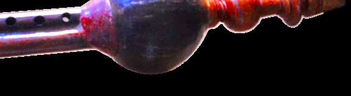
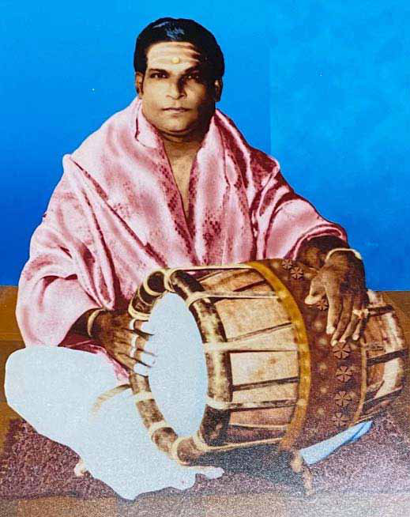
Jaffna Monitor hellojaffnamonitor@gmail.com 60 A B A: A Key milestone in the professional life of N R Sinnarasa (Left), performing along with his maternal uncle Nachimar Kovil Ganeshapillai (R), at a combined clarinet/nathaswaram concert in Selam, Tamil Nadu in 1989. The clarinet player is the legendary Trichy AKC Natarajan (AKCN) who pioneered the use of the clarinet in carnatic music concerts. The Nathaswaram player who is accompanying AKCN is Vizhanagar Uruthirapathy (tpsefu; cUj;jpugjp). B: At the concert the title “Layagnana Kalpana Sironmani” (or Renowned expert of rhythmic wisdom - yaQhd fy;gdh rpNuhd;kzp) was conferred upon Sinnarasa (Source: Personal communication with N R Suthaharan, the son of late N R Sinnarasa)
In the hands of these masters, the thavil became an instrument that formed the very foundations of an art-form that can only be described as divine. They caressed their instruments with their fingers of one hand and a short drum-stick in the other and the combination brought out rhythmic expressions that anchored, enhanced and synchronised with the melodies and improvisations of the nathaswaram players. Their appearance, outfits and general conduct became part of the temple traditions that defined an important component of the Sri lankan culture. Arasakesari Vidwan Alavetti M P Balakrishnan (MPB): MPB or Allavetti Balakrishnan (msntl;b ghyfpU~;zd;)- as he is populary known, was born in Karavetti – a vilage close to Point Pedro in 1938 (01/11/1938). His father;s name was Muthuswamy Periyaswamy and his mother’s name was Parvathy. MPB’s father was a renowned vocalist and a nathaswaram player who was firmly anchored within the carnatic music traditions. The family moved to Alavetti – known for its musical heritage, when MPB was very young and as such MPB came to be known as Alavetti Balakrishnan for the rest of his career. This gave MPB a very early start in his musical career – both in vocal music as well as in nathaswaram. His informal lessons with his father commenced at the tender age of 7 years and continued in a more formal manner at the age of 10. The early emphasis on vocal music laid the foundations for the style of playing which subsequently came to characterise MPB – the strong focus on the lyrics and the melodic flow (referred to as rhfpj;ak; in Tamil). In effect MPB ‘sang’ through his nathaswaram. Having had his early informal lessons from his father Mr Periyaswamy, he had his further advanced lessons with Thiruchendur Krishnamurthy (jpUr;nre;J}u; fpU~;z %u;j;jp) in Tamil Nadu in South India. He
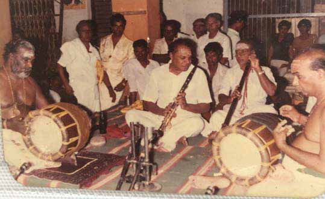
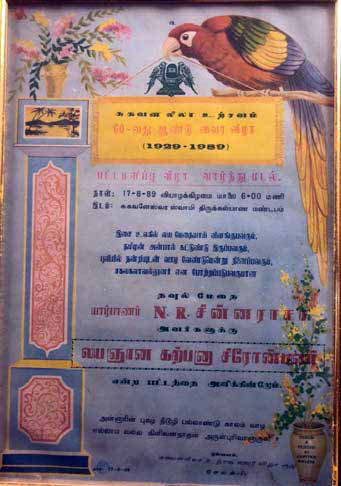
Jaffna Monitor hellojaffnamonitor@gmail.com 61 made regular (almost 6 monthly) trips to South India where he learnt advanced/ latest techniques and compositions in vocal/instrumental carnatic music. On his return from these visits he would - along with his colleague and mentor Alavetti N K Pathmanathan, translate these newly acquired knowledge, skills and compositions to enhance their joint nathaswaram/thavil concerts. Since the age of 17, MPB performed at Radio ceylon as a grade 1 artist in his own right. NKP and MPB performed as a pair for almost a decade and it is known that NKP considered this period as the peak of his career. Balakrishnan’s influence on NKP was profound – both in terms of his emphasis on clarity of ‘sahithyam’ (rhfpj;ak;) and the technical innovations he brought to their joint performances. In the 90s, as a result of the ongoing civil war MPB relocated to Colombo where he created a niche position for himself within the local temples and at social/cultural functions in Colombo. Jintupitti Murugan temple and Ponambalawaneshwarar temple (nghd;dk;gythNz];tuu;) in Pettah are some of the temples where MPB performed regularly. Allavetti Balakrishnan was the pioneer in formalising the Guru-Kulam traditions within the local ‘Isai Vellalar’ community and as a result, many of the frontline nathaswaram artists in Sri lanka were trained under MPB’s mentorship. Panchabikesan’s son Dr MP Nagendran (Canada) and P S Balamurugan (Jaffna) are some of his very famous disciples who went on to develop the art of nathaswaram to new heights in Sri Lanka. Through his initiatives a nathaswaram training school was set up in Karavetti, which A: Nachimar Kovil Ganesha Pillai; Ganeshapillai was the maternal uncle of both N R Sinnarasa and V Thakshinamurthy B: Chavakacheri Nadarajasundaram Pillai – the brother and long time playing partner of nathaswaram Vidwan M Panchapikesan (see part 1- Jaffna Monitor 15th December 2024) (Images courtsey of nathaswaram Vidwan Dr P Nagenthiran, son of Dr M Panchapikesan)
A
B
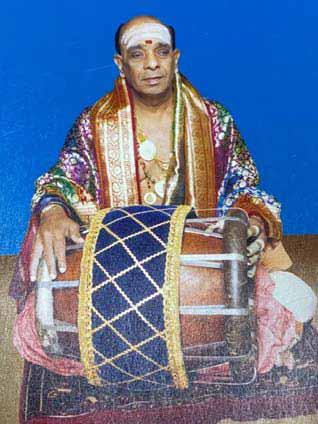
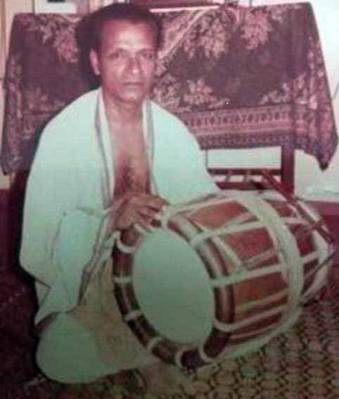
Jaffna Monitor hellojaffnamonitor@gmail.com 62 potentially widens the access to students from the non-Isai vellalar communities. MPB received invitations from many parts of the world – including Canada, USA, UK and in many European countries. Wherever the Tamil diaspora settled, MPB visited and performed with honours and suitable financial rewards following in abundance. Two of his sons – M P Segar and Late M P Suthahar, also became outstanding artists of great independent reputation. Recognising his contributions the Title ‘Arasa Kesari’ (king of kings) was conferered by the Governor of the Northern province in 2023. He also had received major national awards previously from the government of Sri Lanka and some of the spiritual giants of our times such as Thirumuruga Kirubanandavariyar (jpUKUf fpUghde;j thupahu;).
MPB emigrated to canada permanently in 2016, where he currently lives with the rest of his family. His wife’s name is Pankasaleela (Date of birth 10/11/1944). The couple have 2 sons (M P Sekar and Late M P Suthahar) who are outstanding nathaswaram players and four daughters (Kanagangi, Chitrangi, Sarasangi and Rathnangi), most of whom currently live in Canada. Chitrangi – a graduate in Tamil language and classical music from the University of Jaffna, is a strong proponent of carnatic music amongst the Tamil diaspora community in Canada. She currently runs a school for carnatic music – ‘Padini Isaiyagam’ (ghbdp ,irafk;) in Canada, thus continuing the family traditions. Kondavil Ganamurthi–Panchamurthi brothers: As nathaswaram players, the Alavetti M P Balakrishnan being honoured by the Government of Sri Lanka in the presence of the spiritual leader Thirumuruga Kirubanandavariyar (jpUKUf fpUghde;j thupahu;).
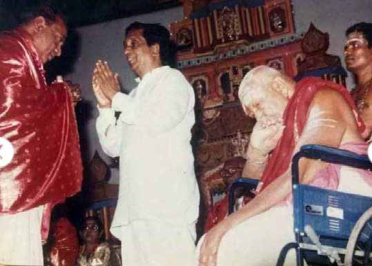
Jaffna Monitor hellojaffnamonitor@gmail.com 63 Ganamurthy-Panchamurthy brothers deserve a special mention in our list of eminent Vidwans of our time. Their relative youth and the spectacle they brought to the music scene in Jaffna - when coupled with the supreme authority that they displayed at their concerts, was greatly admired by an entire generation of fans. Their father Mr Kothandapani, himself was a widely respected nathaswaram player who was instrumental in teaching the brothers the art of playing the nathaswaram quite early in their lives. The older brother V K Ganamurthy was born in 1944 in the village of Moolai in Jaffna district. The younger brother V K Panchamurthy was born in 1948 in Vannarpannai. Moolai Arumugam pillai (MWKfk; gps;is), Mavittapuram Raja (khtpl;lGuk; uh[h) and Inuvil Kandaswamy (,Ztpy; fe;jrhkp) are some of the teachers who provided the brothers with formal nathaswaram lessons. Following their initial training in Sri Lanka, the brothers moved to India for further training where the likes of A V Selvaratnam Pillai (nry;tuj;jpdk; gps;is and Koolikarai Pichaiappah Pillai (gpr;irag;gh gps;is) willingly accepted the brothers as their disciples. They moved to Kondavil in 1958 and since then acquired the name ‘Kondavil Ganamurthy-Panchamurthy brothers’ which would last their entire life times. The brothers held their ‘Arangetram’ (the first formal public recital) in 1963 and following this formal introduction to the music world, the duo became recognised as frontline musicians in Jaffna for the next 4 decades. They received many invitations from all over the world including Europe, Australia, USA and Canada where their energy and the deep interpretations they gave while expressing classical ragas and ‘kalpana swaras’ kept their audience spellbound. In addition to playing as a duo, both of them also accompanied almost all the frontline nathaswaram vidwans of their times. The brothers performed on a regular basis at the Ariyalai Sittivinayagar temple for close to 20 years and were named as the ‘Asthana Vidwans’ of this temple. The concerts played with N K Pathmanathan and others at some of the most prestigious venues in the world are higly valued amongst the rasikas. They blended calssical carnatic music with some of the popular cinema songs that were based on the carnatic or hindustani traditions and these concerts were highly sought after by their fans across multiple generations. The civil war in the 90s forced the family to relocate to Colombo and during this period, Mr V K Panchamurthy performed at the Trincomalee Batrakali Amman temple for 19 consecutive years and was given the title of ‘Asthana Vidwan’ by this temple too. The relative young age at which they touched the pinnacles of their respective careers enabled them to interact professionally with nathaswaram and thavil vidwans spanning five generations. 25 Governor of the Northern Province Mrs Charles, conferring the title Arasakesari (murNfrup) on behalf of the Jaffna Municipal council (Images, courtsey Mrs Chitrangi Sureshkumar, daughter of Mr M P Balakrishnan)
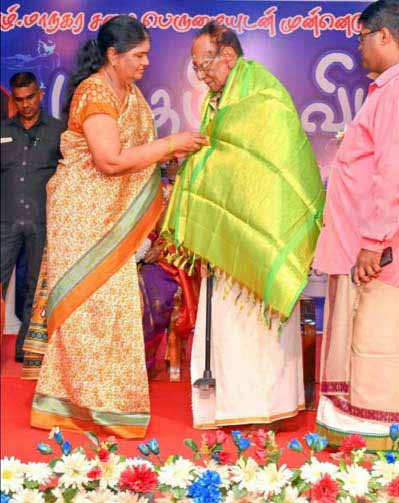
Jaffna Monitor hellojaffnamonitor@gmail.com 64 years of service to nathaswaram music by the brothers was celebrated at a jubillee celebratory event held at the Jaffna University in 1989 by the university staff and their wider audience from across the world. Following the early death of the older brother Mr V K Ganamurthy in 2008 due to chronic liver disease, Mr V K Panchamurthy has continued to perform – both solo as well as in partnership with other frontline nathaswaram and thavil Vidwans. He currently serves as the ‘elder’ of the community providing mentorship and guidance to the next generation of nathaswaram players from Jaffna. His son Panchamurthy Kumaran, currently is considered as one The Ganamurthi (Right)-Panchamurthi (Left) brothers from Kondavil. (Figure courtsey: Mr V K Panchamurthy) V K Ganamurthy and V K panchamurthy being honoured on their silver jubilee after joining forces as a cultural duo and thehighly celebrated icons of Kondavil. (Figure courtsey: Mr V K Panchamurthy)
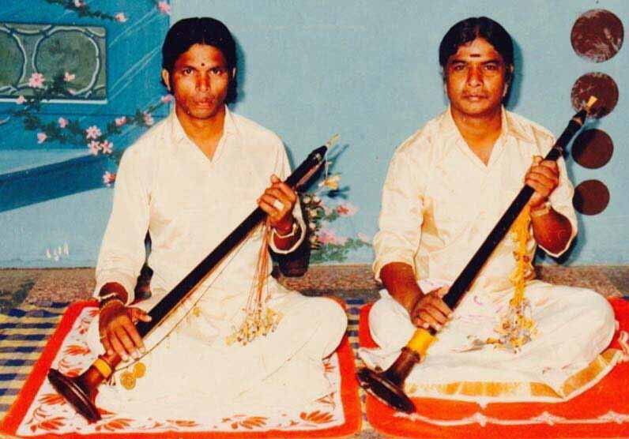
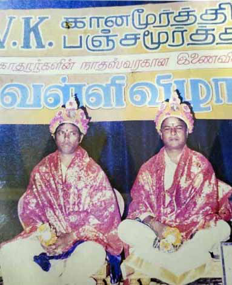
Jaffna Monitor
hellojaffnamonitor@gmail.com
65
of the outstanding nathaswaram vidwans in
the world and Mr Panchamurthy’s guidance
is considered pivotal in Kumaran’s rise to
fame and his attempts to adapt the world
of nathaswaram/thavil music to meet the
changing tastes of the rasikas all over the
world. Kumaran’s son Sasvihan is also an
accomplished player who has also commenced
his career at the tender age of 10, and will
no doubt carry the name and traditions of
Ganamurthy-Panchamurthy brothers into the
future.
Cultural confluence and joint heritage:
The study of the musical history of any given
community, provides interesting insights into
the various interactions that produce what
we subsequently identify as that community’s
culture. Indigineous practices and equipment
are usually shaped and modified by a
wide variety of extraneous factors and
the ingenuity of the local artists and the
demands posed by the local population
will usually determine what is adopted and
what is rejected. In this context the study
of the history of nathaswaram provides an
interesting mixure of how an instrument
which was native to nomadic populations
within the Indian subcontinent (Pungi or
kFb), had been transformed progressively
over centuries. In this context it is also worth
observing that human history is similar to a
river that continuously flows in one direction
taking in and assimilating the flow of water
from multiple tributaries. It is therefore
fundamentally wrong for those of us living
down stream to try and dissect out which part
of the river is the ‘original river’ and which
part is the ‘contaminant’. The cultural purists of
our time – wherever they are, must be weaned
away from resorting to such futile pass times
and be encouraged to see the commonalities
in human needs and human endevours which
have resulted in a ‘joint heritage’ that belongs
to the whole of humanity. The life stories of
some of the giants of our times who have
embedded some of these artforms within our
communities and have shaped our musical
history cannot be ignored in the process and
recording their achievements for posterity is
the duty of all of us with an interest in music.
The nathaswaram/thavil vidwans who have
been named in this article (and in Part 1 of
this series: Jaffna Monitor 15th December
2024) are true giants in their fields – by any
standards, and their names and achievements
should be celebrated and cherished in our
collective memories.
To be concluded in Part 4 in the next issue...
Mr Panchamurthi
(Left) in concert with
the next generation of
nathaswaram Vidwans
Dr Nahendran
Panchapikesan (right)
at a concert in Sydney
Australia in 2015.
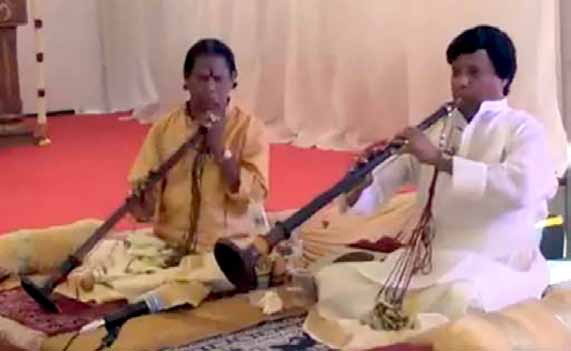